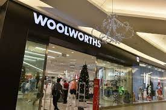
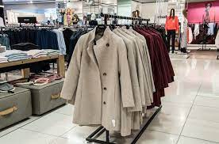
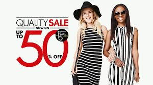
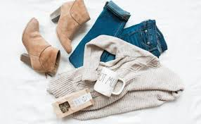

WOOLWORTHS
Founded by Max Sonnenberg, Woolworths first opened its doors on 30 October 1931 in Plein Street Cape Town, in the dining room of the recently-closed down Royal Hotel. It was an immediate success, and two more stores were opened in the Cape. It was clear that the new business had the potential to expand nationwide except for a lack of capital. Sonnenberg's friend Elie Susman put up the money for the expansion of the business into the Transvaal and became Sonnenberg's business partner.
Woolworths Holdings Limited (JSE: WHL) is a South Africa-based multinational retail company that owns the South African retail chain Woolworths, and Australian retailers David Jones and Country Road Group. Woolworths, however, has no association to Australia's Woolworths supermarket chain.
The South African Woolworths business consists of full-line fashion, home and beauty stores, many of which incorporate a premium food retail offering. Stand-alone food stores and "Food Stops" attached to Engen petrol stations are also located in urban areas. Woolworths operates 218 full line stores and 430 food stand alone stores in South Africa,[when?] with 64 stores throughout the rest of Africa.[when?] Woolworths sells clothing and accessory items under a number of premium brands, namely Studio W, RE: and Edition, with the Group’s Australian brands Country Road, Witchery and Trenery also represented.
